Operating Documentation
Direction 5440000, Rev# 5
Signa HDxt Service Methods
Module Version 2.0, Version Date 12/1/09
Operating Documentation |
| Required Persons | Preliminary Reqs | Procedure | Finalization |
|---|---|---|---|
| 1 | Not Applicable | 45 mins | 20 mins |
Early RF amplifiers with the serial numbers 0001 to 0030 require a fan replacement process that is different than that used for later RF amplifiers. Use this document for Fan Replacement for Early SRFD2 Amplifiers (Serial numbers 0001 to 0030) ONLY. Use Fan Replacement For Later SRFD2 Amplifiers Only on an RF amplifier with a serial number of 0031 or later. See 1.5T SRFD2 RF Module Fan Replacement for any questions about determining which serial numbers apply. The RF amplifier serial number is marked on a factory sticker attached to the rear of the RF amplifier.
| Item | Qty | Effectivity | Part# | Manufacturer | |
|---|---|---|---|---|---|
| #2 Phillips screwdriver | 1 | - | - | - | |
| Slot screwdriver | 1 | - | - | - | |
| Needle nose pliers | 1 | - | - | - | |
| ||||
| ELECTROCUTION Hazard! | ||||
| POWER NOT REMOVED FROM THE SRFD2 CABINET BEFORE ATTEMPTING TO SERVICE THE UNIT | ||||
| REMOVE POWER FROM THE SRFD2 CABINET BEFORE ATTEMPTING TO SERVICE THE UNIT. VERIFY THAT THE RFI/AMP AND SSM BREAKERS ON THE FRONT OF THE PDU ARE OFF. LOCK AND TAG OUT THE PLEXI-GLASS COVER ON THE FRONT OF THE PDU. |
| Condition | Reference | Effectivity |
|---|---|---|
- | ||
Anti-tip legs have been installed on the front of the cabinet. | - | - |
Remove the eight screws that secure the amplifier to the cabinet. See Illustration 1.
Illustration 1: LOCATION OF SCREWS TO BE REMOVED
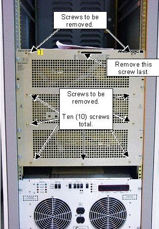
| NOTE: | Make sure cables connected to the rear of the module are not tangled to protect the cables from damage when pulling out the module. |
Remove the ten (10) screws to remove the front grill plate of the SRFD II Module. See Illustration 1
Illustration 2: LOCATION OF SCREWS TO BE REMOVED
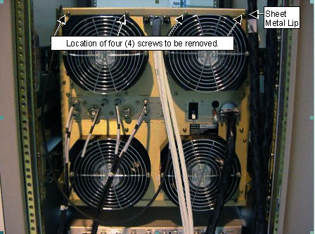
Pull module out slightly on the rails to access the rear panel screws
| NOTE: | In order to access all the rear screws, it may be necessary to slide the module in slightly |
If replacing one of the two upper fans then, from the rear of the SRFD2 module, remove the four (4) screws on the upper sheet metal lip on the module. See Illustration 2.
Illustration 3: LOCATION OF SCREWS TO BE REMOVED
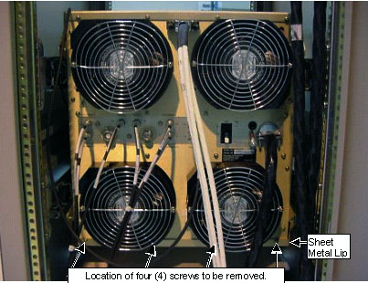
If replacing one of the two lower fans then, from the rear of the SRFD2 module, remove the four (4) screws on the lower sheet metal lip on the module. See Illustration 3.
After removal of the rear panel screws, slide the module fully forward to access the side screws.
If one of the upper fans has failed then remove the 5 flathead countersunk screws (Total of 10 Screws) from each side of the upper part of the assembly as shown in Illustration 4.
Illustration 4: LOCATION OF SCREWS ON SIDE OF MODULE FOR UPPER FAN REPLACEMENT
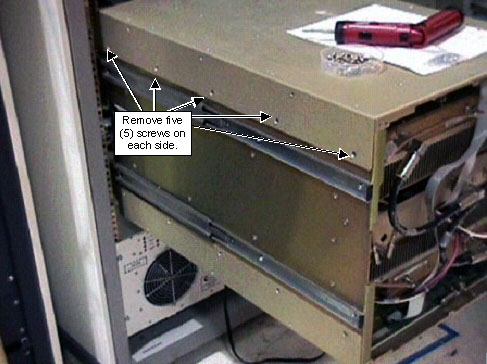
Put the Electric-static Discharge Wristband on yourself and attach the ground clip to the cabinet.
Disconnect the IPS Cable and RF coaxial cables
If replacing a failed upper fan then disconnect the IPS Cable from the upper shelf only. See Illustration 5, Illustration 6 and Illustration 7
Illustration 5: IPS CABLE LOCATIONS
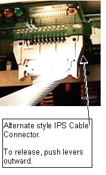
Illustration 6: IPS CABLE LOCATIONS
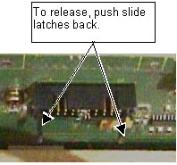
Illustration 7: IPS CABLE LOCATIONS
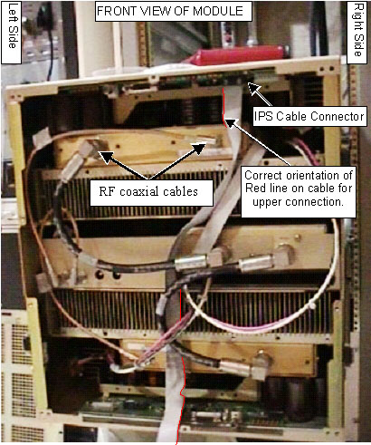
If replacing a failed upper fan then disconnect the two RF coaxial cables from the upper shelf and move them out of the way. See Illustration 5 , Illustration 6 and Illustration 7.
If replacing a failed lower fan then disconnect the IPS Cable from the lower shelf only. See Illustration 5, Illustration 6 and Illustration 8.
Illustration 8: IPS CABLE LOCATIONS- UPPER CONNECTION
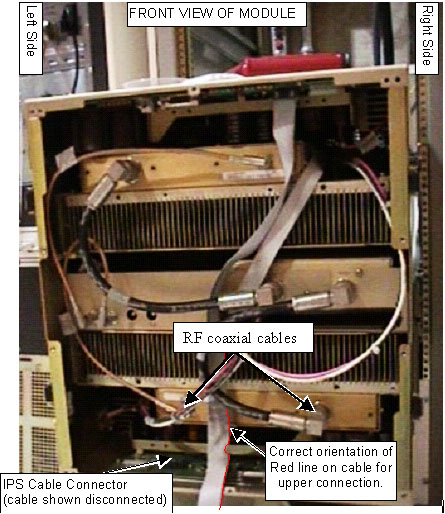
If replacing a failed lower fan then disconnect the two RF coaxial cables from the upper shelf and move them out of the way. See Illustration 8.
If replacing one of the lower fans then support the front of the lower half of the module and remove the 5 rear-most flathead countersunk screws (total of 10 screws) from each side of the lower part of the assembly. Allow the front half of the module to hinge down and rest on the floor. See Illustration 9 and Illustration 10.
Illustration 9: LOCATION OF SCREWS ON SIDE OF MODULE FOR LOWER FAN REPLACEMENT
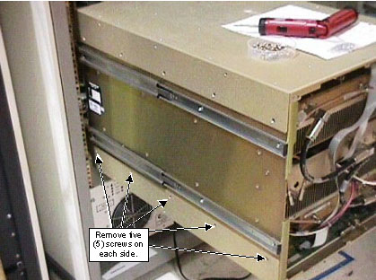
Illustration 10: LOWER SRFD2 MODULE EXPOSED
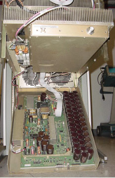
If replacing one of the upper fans, open the upper shelf of the module and secure each side to the cabinet frame with two (2) Ty-wraps. SeeIllustration 11.
Illustration 11: UPPER SHELF OPEN AND SECURED
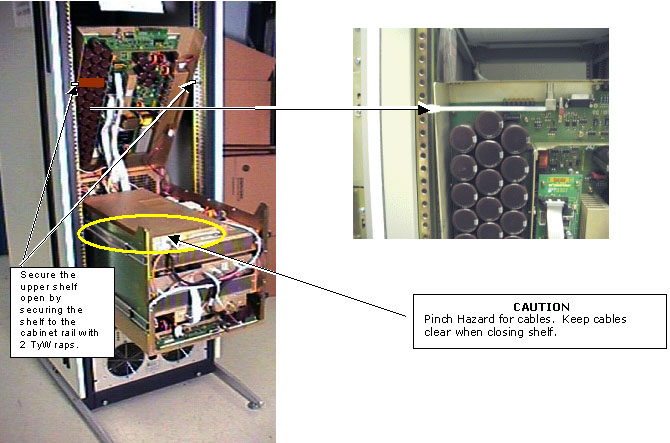
If replacing upper fans then remove the 8 screws from the upper module as shown in Illustration 12 .
Illustration 12: 8 SCREWS SECURING MODULE TO CHASSIS
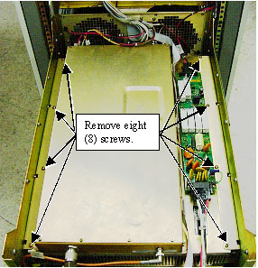
Exercising care to not damage any cables, carefully slide the amp module forward at least 5 inches (~13 cm) to gain access to the fans as shown in Illustration 13
Illustration 13: SLIDING AMP MODULE FORWARD TO GAIN ACCESS TO FANS
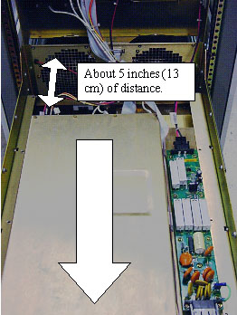
| NOTE: | Removing the eight (8) screws securing the lower amp module to the chassis when replacing a failed lower fan will not allow the amp module to fall out of the unit. |
If replacing the lower fans then remove the eight (8) screws in the lower module as shown in Illustration 12.
Exercising care to not damage any cables, carefully slide the lower amp module forward at least 5 inches (~13 cm) to gain access to the lower fans as shown in Illustration 13.
Replace the fans.
If replacing any of the upper fans, insert a slot screwdriver shaft through the fan as shown in Illustration 14 to keep the fan from falling into the cabinet after the screws are removed
Illustration 14: USING SCREWDRIVER TO HOLD FAN
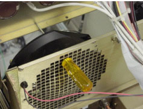
Remove the screws securing the failed upper or lower fan
Use pliers, if necessary, to grasp each red and black power lead connector (NOT THE WIRES!) and remove it from the fan
| ||||
| The fan power leads are polarized and must be correctly connected to the fan. Reversing the leads will cause the fan to rotate in the opposite direction and this will degrade the cooling capability of the RF amplifier. | ||||
Note that the fan power connections are polarized. On the replacement fan, attach the red (positive) lead to the fan power terminal marked '+' and attach the black (negative) lead to the fan power terminal marked '-'.
Attach the replacement fan to the chassis using the 3 screws removed earlier
Remove the slot screwdriver used to hold the fan in place during the replacement process.
Carefully slide either the upper or lower amp module back into the chassis and secure using the 8 screws removed earlier
| ||||
| The IPS ribbon cable connectors are not keyed. Care must be taken to insure that the connectors are reattached in the correct orientation. | ||||
Reconnect the IPS ribbon cable so that the red line on the cable is oriented closest to pin 2 (this notation is marked to the side of the connector on the circuit board) on the IPS connector. This is shown inIllustration 15.
Illustration 15: CABLE PLACEMENT AND ORIENTATION
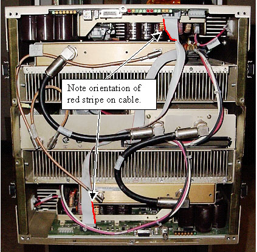
Reattach the two (2) RF coaxial cables removed earlier from the front of the module. See Illustration 15.
| ||||
| Avoid cable damage! Take care to insure that cables are not pinched and damaged when closing the upper or lower halves of the amplifier assembly. | ||||
Taking care to insure that cables are not pinched, carefully close the upper or lower half of the amplifier assembly and reinstall the 8 screws to secure it to the chassis.
Replace the 4 screws to secure the upper or lower rear sheet metal lip to the chassis
Install the front chassis cover plate on the SRFD2 and secure with the 10 screws removed earlier
Slide the SRFD2 amplifier back into the cabinet and secure to the cabinet using the 8 screws removed earlier.
Proceed to Step .
Reconnect any coaxial cables removed earlier to rear of RF amplifier
Remove Lockout/Tagout hardware from PDU and follow proper Lockout/Tagout procedures to put PDU breaker in on position and reapply power to system.
Place power breaker on rear of RF amplifier into up (ON) position. Note that fans all rotate in same clockwise direction. If replacement fan does not rotate in correct direction then power leads are swapped. This must be corrected or early amplifier failure may result.
Perform one head and body scan to confirm that the system is fully operational
Remove the anti-tip legs from the RF Cabinet.